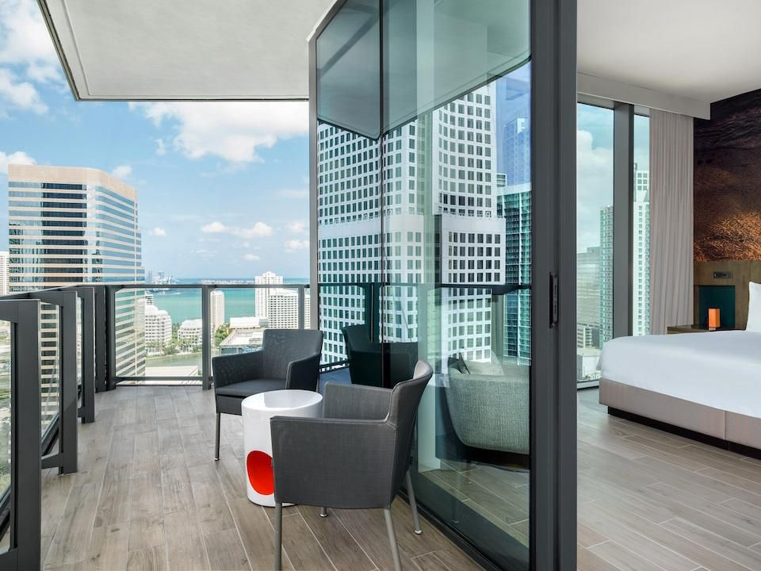
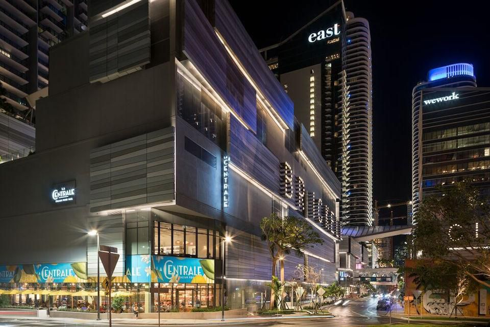

Brickell is a dense, high-rise residential neighborhood with many upscale, luxury condominium and apartment towers. Brickell Avenue, Brickell's main north-south avenue and along Miami Avenue, home to many popular Miami restaurants, shops and places of entertainment. A few hundred feet east of the northeastern side of Brickell is Brickell Key, a gated island of upscale, high-rise residential and hotel towers. As of 2009, over 190,000 office employees work in greater Downtown.[5] Today, greater Downtown Miami is one of the fastest-growing neighborhoods in Miami, booming from 40,000 residents in 2000 to 80,000 in 2010. Brickell is served by the Miami Metrorail at the Brickell station and by 5 stations of the Metromover's Brickell Loop.
Demographics
As of 2010, the population of Brickell had 27,776 people, with a population density of 37,622 per square mile, making it one of the densest neighborhoods in the United States. In the 2010 US Census, the racial makeup of Brickell was 62.0% Hispanic of any race, 33.2% White (non-Hispanic), 1.6% Asian, and 1.4% Black. The zip codes for Brickell include 33129, 33130, and 33131. The area covers 1.084 square miles (2.81 km2). Many of its daily occupants work in banking, law, and finance.
As of 2000, there were 5,557 males and 5,972 females. The median age for males was 38.4 years old, while the median age for females was 40.6 years old. The average household size had 1.8 people, while the average family size had 2.6 members. The percentage of married-couple families (among all households) was 30.3%, while the percentage of married-couple families with children (among all households) was 8.5%, and the percentage of single-mother households (among all households) was 4.3%. The percentage of never-married males 15 years old and over was 20.2%, while the percentage of never-married females 15 years old and over was 16.0%.
As of 2000, the percentage of people who speak English not well or not at all made up 27.7% of the population. The percentage of residents born in Florida was 17.1%, the percentage of people born in another U.S. state was 13.7%, and the percentage of native residents but born outside the U.S. was 3.9%, while the percentage of foreign-born residents was 65.3%.
Brickell is a highly educated and affluent neighborhood. As of 2014, an estimated 75% of residents older than 25 hold at least a bachelors level degree with 34% holding an advanced degree. The approximate average household income of $125,500 is more than twice the average for the City of Miami.
The Conrad Brickell hotel is ready to reveal its $10 million renovation
Two years after renovations began, the Conrad Brickell Downtown hotel will unveil its $10 million makeover in December.The Miami-based development and investment firm Mast Capital planned renovations since purchasing the hotel at 1395 Brickell Ave. in 2017 for $72 million. Mast Capital hired the New York-based interior design firm Champalimaud Design in October 2017 to redo the hotel, which was built in 2004 as part of the 36-story Brickell Arch office skyscraper. Construction work of the hotel’s 203 guestrooms, lobby, meeting spaces, corridors and restaurant started in August 2019. Mast Capital also has access to 41 of the 116 luxury residential units within the Brickell Arch tower, but those are not included in the renovation plans.
Large Protest Takes Place In Downtown Miami Over Immigration
Democrats are demanding that any spending bill include protections for undocumented immigrants brought to the United States illegally as children. President Trump rescinded DACA in September and gave Congress six months to turn the protections into law. He also ending the TPS program for people from Haiti, El Salvador and Nicaragua. Miami residents turned out to let their voices heard. “This country has been built on backs of immigrants and the way that they are treated, DACA recipients and TPS recipients and dividing family, is a crime,” said Imara Rojes. Elena Munious said we were all immigrants at one point and everyone should have the same opportunity. Approximately 800,000 young immigrants were brought to the United States as children, known as Dreamers. Firmate Peters and her family is one of them. “We contribute to this country, we pay taxes, we have children [in this] country and some of us are here for 20-30 years,” she said. Haitian immigration activist Marleine Bastien called out the president, saying his decision was not based on facts. “We fear that the president, based on the comments he made recently, that his decision was based on racism and discrimination and bigotry and not the facts on the ground,” Bastien said. Haitian Women of Miami are planning to be out protesting again on Thursday at 11 a.m.

Brickell City Centre | The Heart
Brickell City Centre is a $1.05 billion shopping and mixed-use project in Miami, Florida. When finished, it will span up to five blocks to the west of Brickell Avenue and to the south of the Miami River, in the Brickell district of Greater Downtown.

Free Mover | Anywhere and Everywhere
Miami's free Metromover has been a boon to the recent development, making the area more accessible for both residents and workers. One of the Metromover's 21 stations is located right at Brickell City Centre and the connectivity and sprawling shopping center is reminiscent of the mega-shopping malls of Shanghai and Hong Kong. The Asian inspiration is not surprising, considering that Swire Properties is part of Hong Kong-based, publicly traded Swire Pacific Ltd. The model that's worked so well in densely populated Asian metropolises has been implemented with great success here.
Massive New Construction | EAST Bay King Balcony
Mixed-use development Brickell City Centre opened in November 2016, anchoring the neighborhood with a $1.05 billion mixed-use project, encompassing two condo towers, office buildings, 352-room hotel EAST, Miami and 500,000 square feet of shopping spanning nine acres. Miami-based Swire Properties Inc. has bet big on the neighborhood, developing other condominiums and apartments in Brickell corridor and Brickell Key too. They're received LEED Gold certification among other awards for the project's sustainability features – most notably the Climate Ribbon elevated trellis which regulates air flow and temperature, maximizes natural light and collects rainwater for reuse./p>
Creative Culture | Frost Planetarium
Downtown's not just for shopping though. Just north of Brickell, Museum Park hosts music festivals and is home to two of Miami's newest museums – Pérez Art Museum Miami and the Phillip and Patricia Frost Museum of Science. The interactive science museum combines planetarium and three-level aquarium with natural history through engaging exhibits for kids of all ages, and adults too. Pretend you're Matt Damon in The Martian during a surround sound outer space odyssey.

Explore | Hew Locke For Those In Peril On The Sea
Next door, PAMM's modern and contemporary art collections feature Miami-based artists like Lynne Golob Gelfman along with international exhibits like Hew Locke's floating ships, a colorful and poignant representation of Miami's history as a destination for immigrants reaching America by sea from the Caribbean and Central America.
Delicious Eats | La Centrale
Miami's top spot for sushi is eight-seat NAOE on Brickell Key. The discreet omakase-only restaurant celebrates 10 years in March. Chef Kevin Cory serves sushi with his family's own sake and soy sauce, eschewing endangered bluefin tuna in favor of kinmedai golden eye snapper, karasumi mullet roe and invasive local lionfish, a sweet and delicate bite of nigiri. Several of Miami's other popular restaurants, including Pubbelly Sushi and Casa Tua, have opened locations within Brickell City Centre. And Casa Tua's only one of the two Italian food halls at BCC. The other, La Centrale, is even bigger, basically Eataly by another name, with a massive ground floor market with specialty imported groceries and restaurants specializing in pizza, pasta, seafood and vegetables on the second floor.